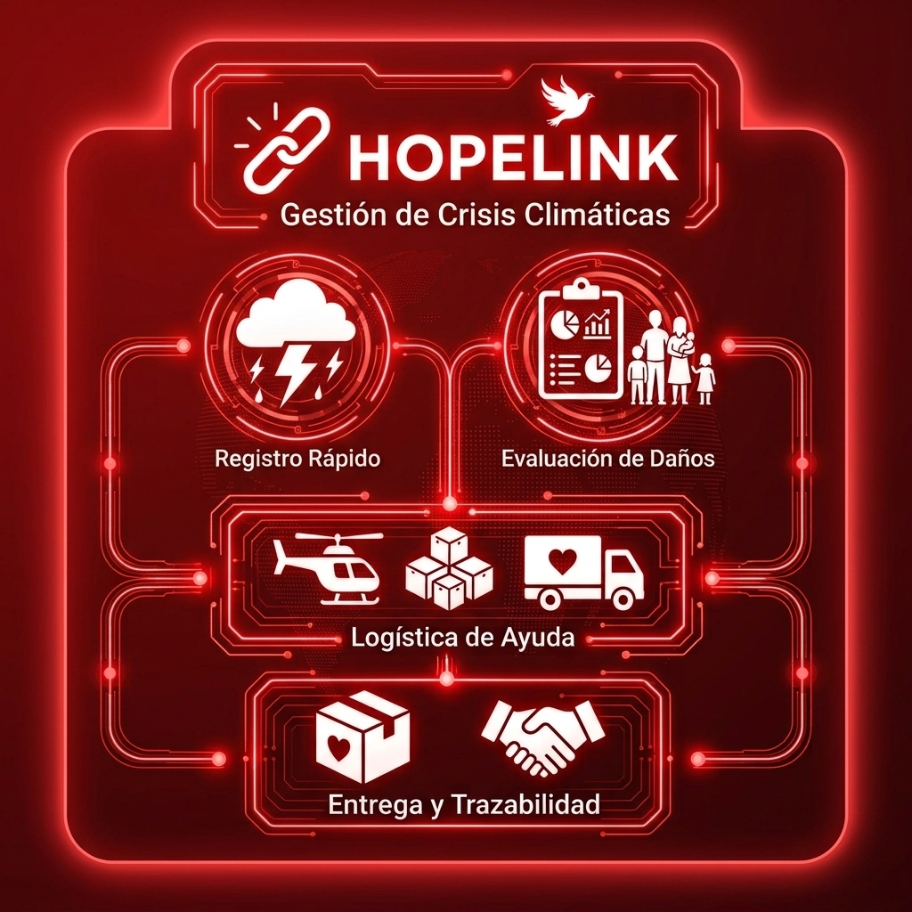
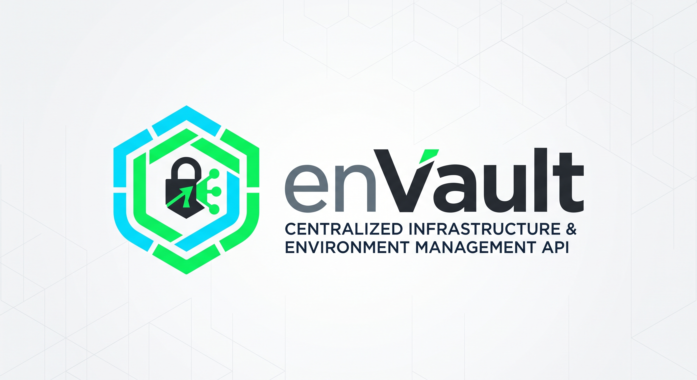

Proyectos
Proyectos desarrollados por los estudiantes de 5A

Hope-link
Api para la gestión integral de emergencias y respuesta ante desastres naturales. Permite el registro centralizado de personas afectadas, la caracterización de sus necesidades inmediatas y la administración eficiente de la ayuda humanitaria entregada.

FoodBridge API
API que conecta supermercados y otros establecimientos con personas, fundaciones y bancos de alimentos para reducir el desperdicio de comida mediante donaciones o ventas a bajo costo.

PetCare
Plataforma API RESTful para la gestión veterinaria, seguimiento clínico e historial médico de mascotas.

MicroScore API
API que evalúa solicitudes de microcréditos de pequeños emprendedores sin historial bancario para facilitar la inclusión financiera mediante un sistema de puntuación basado en sus ingresos y gastos diarios.

enVault
Esta API REST actúa como un sistema centralizado de gestión de infraestructura y configuración de software que administra de forma segura los entornos de ejecución (como desarrollo, pruebas y producción) y sus respectivas variables de entorno mediante cifrado de datos.

SiGanado
Plataforma integral para fincas que centraliza el control pecuario, la gestión de inventarios y la administración de finanzas del negocio ganadero.

LexiLearn
LexiLearn es una plataforma educativa interactiva para estudiantes con dislexia, similar a Duolingo. En lugar de solo convertir documentos a audio, el sistema evalúa las dificultades del estudiante en áreas como lectura, comprensión, ortografía, memoria y reconocimiento de palabras, y a partir de sus resultados genera ejercicios personalizados.